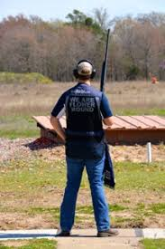

One of my favorite things to do after a long day is heading to the local pond to try and catch some massive Bass. This summer was no exception, I went fishing almost every day as soon as I got off work. And because I moved up to Massachusates I got into Stripped Bass fishing, me and my buddy took a charter off the cape and caught tons of fish. I am also joining the Umaine fishing club this year to continue one of my favorite hobbies.
I started competive shooting my freshman year of high school, and fell in love with the sport.I shot all over the DFW area throughout high school, including the National Shooting Complex in San Antonio. My Sophmore year I ranked in the top 10 shooters in the Youth Target Foundation state championship for Trap shooting, and continue to push myself to be the best. I also was hevily involved with the organization and lgistics of the team as I served as the teams Vice president junior year,then as the President of the club my senior year.
 Links to: Home Family Resume